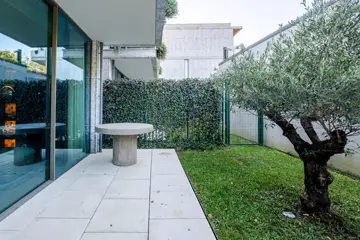
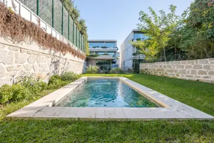

Sala com jardim
Vidro do chão ao teto e a oliveira como quadro principal.
Três suites, sala aberta para um jardim privativo com oliveira e piscina no condomínio. Para quem quer viver a Foz sem abdicar de silêncio.
Agendar visita privada

Vãos de vidro do chão ao teto, orientação poente e luz até ao fim da tarde.
À entrada, um hall abre para a sala de estar e jantar, com acesso direto ao jardim. A cozinha vem equipada com eletrodomésticos Bosch e tem lavandaria separada; há ainda uma casa de banho social. No piso de cima ficam as três suites, duas delas com saída para a varanda. A garagem fechada, para dois carros, liga diretamente à casa.
Vidro do chão ao teto e a oliveira como quadro principal.
Linhas limpas, bancada contínua e lavandaria separada.
Cabeceira estofada, papel de parede texturado e casa de banho em mármore.
Um percurso contínuo da sala até ao jardim, tal como o vai fazer na primeira manhã. Depois, marque a visita e confirme ao vivo.
Nevogilde, Porto
Ver o filme
O passeio marítimo e as praias de Nevogilde e da Foz do Douro.
Lagos, prados e percursos a pé até ao mar.
Serviços, restaurantes e ligação rápida ao centro.
Colégios nacionais e internacionais na zona ocidental do Porto.
Mostramos a casa com tempo, sem outros interessados à mesma hora. Respondemos no próprio dia útil.